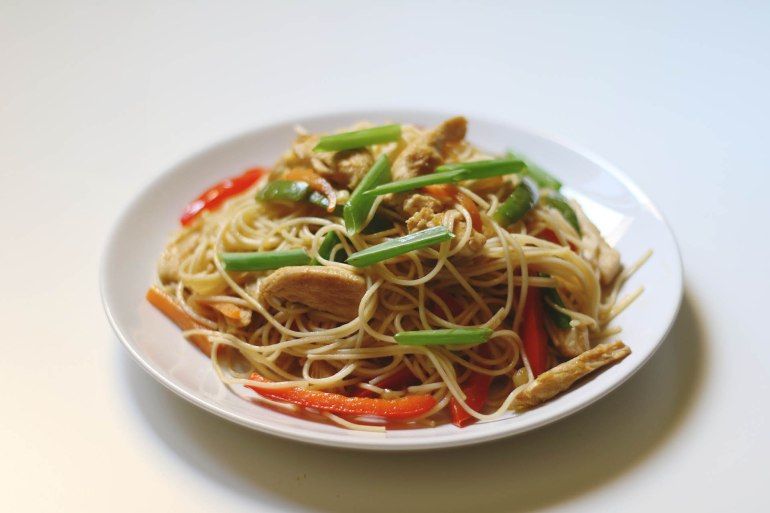

(click here to return to home page)
Chicken Hakka Noodles
(Indo Chinese street food which packs a big flavour punch)
Prep Time: 10 minutesCook Time: 10 minutes

Ingredients:
- 1 pack (150 g) Hakka noodles
- 150g boneless chicken breast
- 3 tbsp olive oil
- 3 garlic pods
- 1 inch fresh ginger
- 2 tbsp spring onion whites
- 1 medium-sized carrot
- 1/4 cup thinly sliced cabbage
- 1/2 cup green and red capsicum
- 1 tbsp soy sauce
- 2 tsp red chili sauce
- 1 tsp vinegar
- white pepper powder to taste
- salt to taste
- 1 tbsp spring onion greens for garnishing
Instructions:
- Chop garlic and spring onion whites finely. Clean and cut the chicken into thin strips. Make sure to chop all the veggies and ginger as thin as possible as they will take less time to cook.
- Cook noodles as per instructions given in the pack or boil noodles in plenty of water until firm or 3/4 cooked. Don't overcook. Drain the water and pour cold water over the noodles, drain that cold water immediately and toss the noodles with 1 tsp of oil and keep it aside.
- Heat up oil in the pan and saute chopped garlic, ginger and white onions for few seconds or until they turn into light golden brown.
- Place the chicken strips and saute for 3 mins or until browned.
- Add the carrots, cabbage, red and green capsicums, one by one (stir continuously) and cook for a couple of minutes or until they are cooked but still crunchy over high heat.
- Then add soy sauce, chili sauce, and vinegar, mix everything well.
- Toss in the boiled noodles and sprinkle some salt, and white pepper and toss well for few seconds or until the noodles are well coated with sauce. Use a fork to mix so that the noodles do not break. Finally, garnish it with spring onion greens.